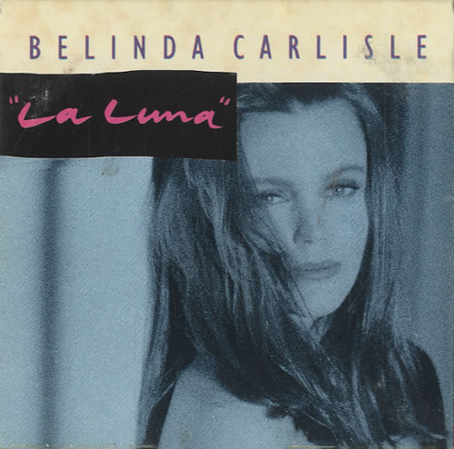

|  |
|
(Lyrics) I remember when I met you All the stars were hanging in mid-air In these moments - nothing mattered But the way you caught me in your stare We were walking - we were talking We were laughing about the state of our lives How our fates brought us together As the moon was rising in your eyes On and on the night was falling Deep down inside us On and on a light was shining right through Ah La Luna La Luna The night that we fell under the spell of the moon Ah La Luna La Luna The light that will bring me back to you The light of La Luna In the hotels, in the cafes All the world was mad with romance In the harbor moonlit water All the ships were swaying in a dance Then you held me and you kissed me And I knew I had to be with you You didn't ask me you just took me To the tiny bed in your tiny room On and on the band was playing A song of surrender On and on the sun would soon break through Ah La Luna La Luna The night that we fell under the spell of the moon Ah La Luna La Luna The light that will bring me back to you The light of La Luna (2) Now I walk along the streets of Marseilles The winter sky is cold and gray And I don't know why I left you that day And I don't know where you are |
(Letra en Español) Recuerdo cuando te conocí Todas las estrellas colgaban en el aire En estos momentos - no importaba nada Pero la forma en que me cogi en tu mirada Caminábamos - hablábamos Nos reíamos sobre el estado de nuestras vidas ¿Cómo nuestro destino nos ha unido Como la luna se elevaba en tus ojos ? Una y otra vez la noche estaba cayendo En el fondo dentro de nosotros Una y otra vez una luz brillar a través de nosotros ¡Ah! La Luna La Luna La noche que cayó bajo el hechizo de la luna ¡Ah! La Luna La Luna La luz que me llevará de nuevo a usted La luz de la Luna En los hoteles, en los cafés Todo el mundo estaba loco con el romance En el agua iluminada por la luna puerto Todos los barcos se mecen en un baile Luego me abrazó y me besó Y yo sabía que tenía que estar con ustedes Usted no me pidió que me llevó Para la pequeña cama en su habitación pequeña Una y otra vez la banda estaba tocando Una canción de surrender Una y otra vez el sol pronto romper ¡Ah! La Luna La Luna La noche que cayó bajo el hechizo de la luna ¡Ah! La Luna La Luna La luz que me llevará de nuevo a usted La luz de la Luna (2) Ahora camino por las calles de Marsella El cielo de invierno es frío y gris Y yo no sé por qué te dejé ese día Y no sé dónde estás |